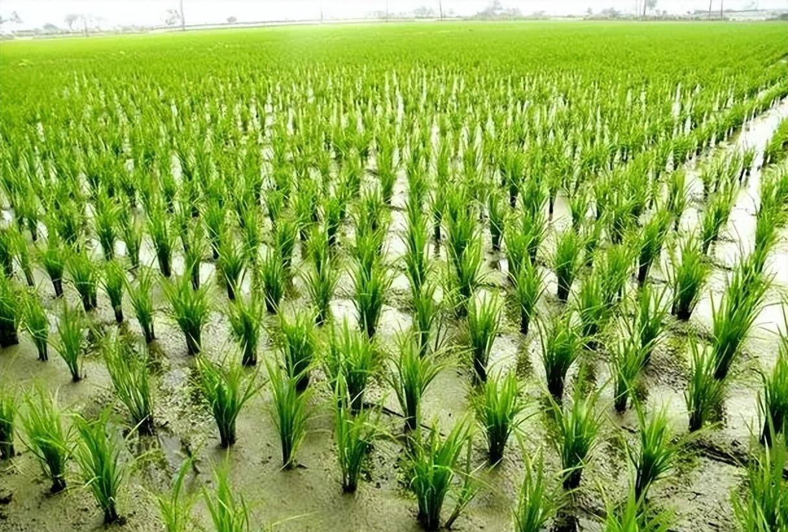
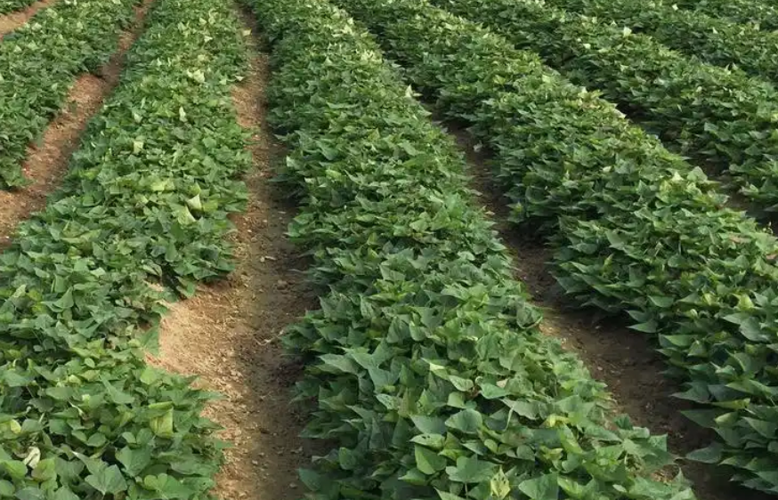
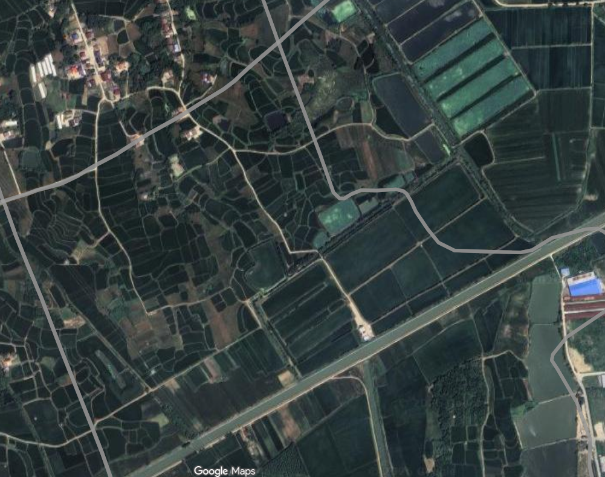
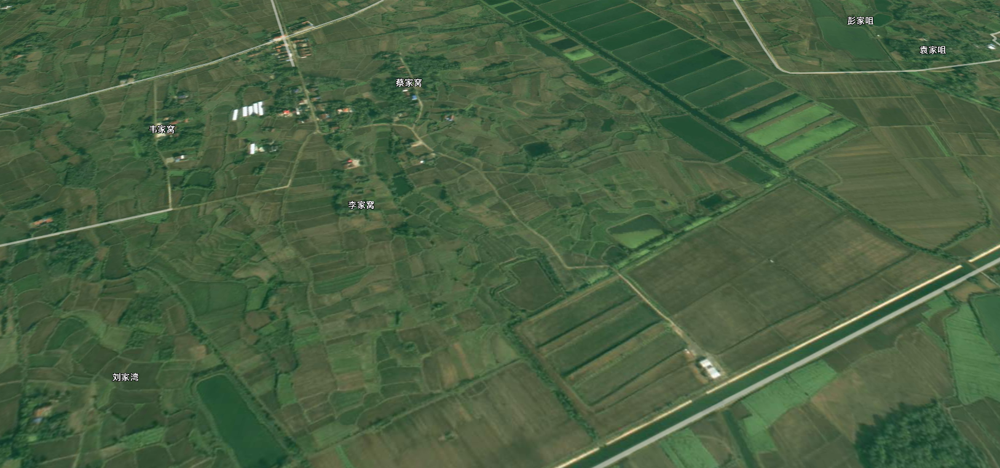
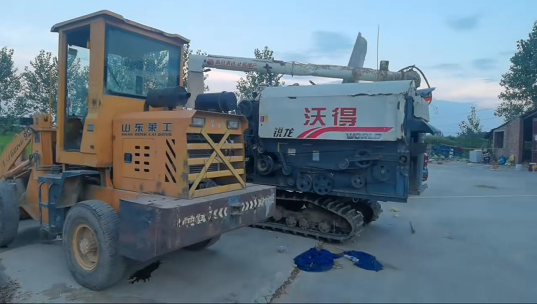
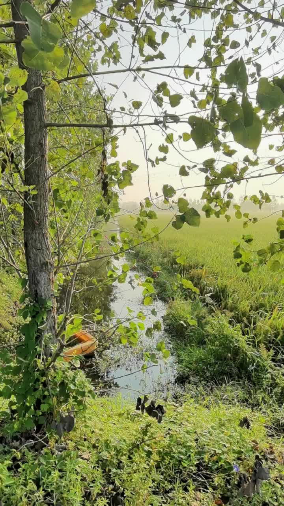
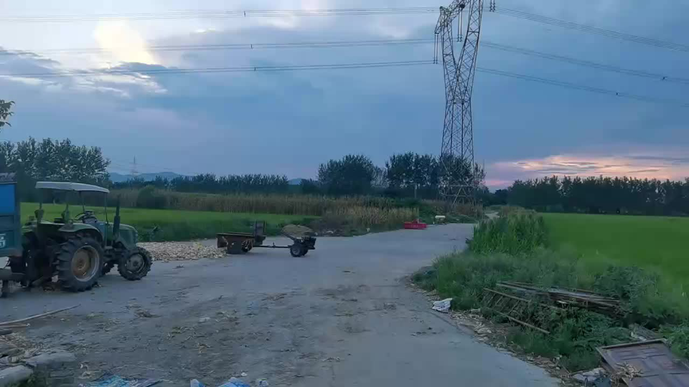
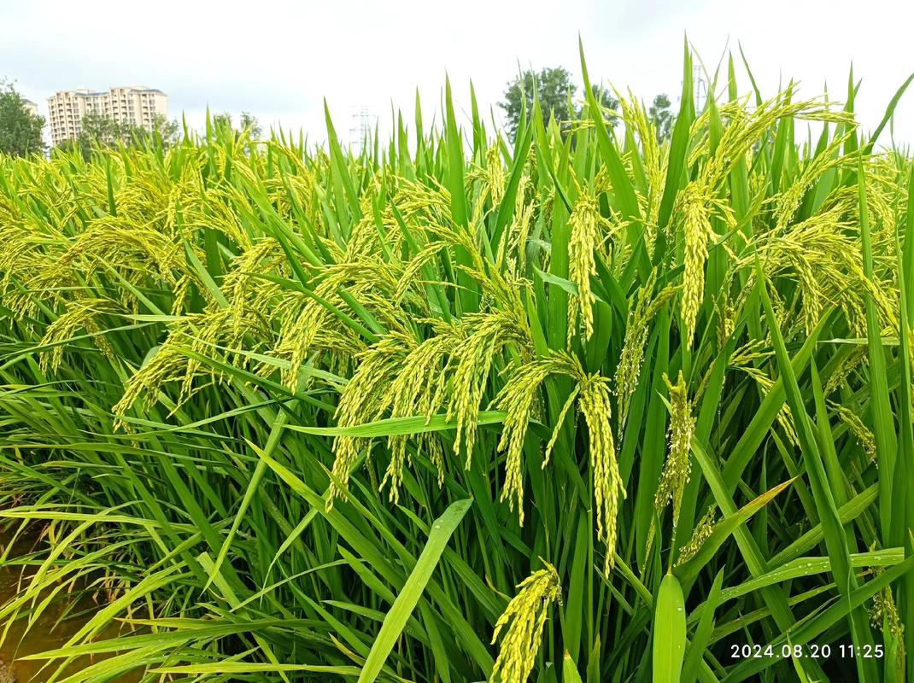
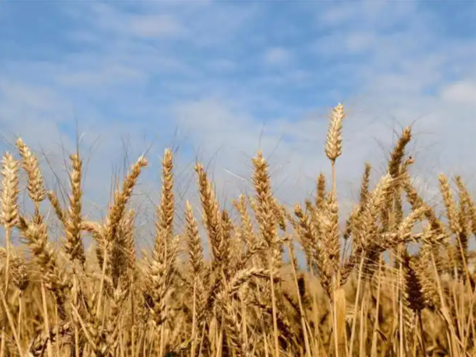
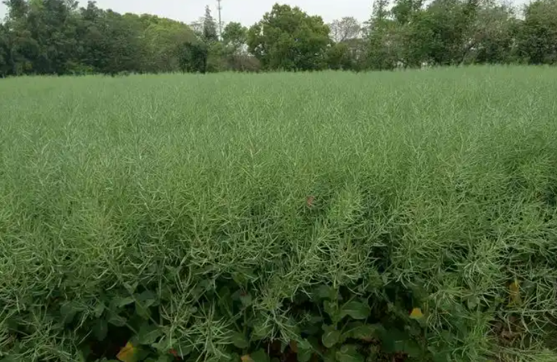

实拍 · 产出主力 84%河边好田
200
郑家湾泵站灌区核心区 · 智能化调度 · 剩余租期 5 年
建议用途：规模化粮油种植 · 稻虾共作

实拍 · 产出主力 84%郑家湾泵站灌区核心区 · 智能化调度 · 剩余租期 5 年

实拍 · 特色增值 16%丘陵坡地梯田 · 生态种植区 · 剩余租期 7 年

谷歌卫星 · 平面
三维地貌 · 地形
实拍 · 收割装备
实拍 · 水利
实拍 · 供电以下视频均摄于地块现场：稻田、水渠、机耕路、农机装备，一次看全。点击播放，身临其境。
历年种植项目验证了本地块的适种范围与产出潜力。承租方可直接沿用成熟模式，也可按市场自行调整结构。

主种作物 · 实拍河边好田 · 200 亩 · 一年一至两季
本地块主栽作物，泵站灌区保障稳产，是承租后粮油种植的核心选择。

秋冬轮作河边好田 · 200 亩 · 秋冬轮作
与水稻轮作提升土地利用率，本地成熟的"稻—麦"两熟模式。
河边好田 · 水源充足区 · 一次开发
收益显著高于纯粮油；郑湾村二组已有康绿稻虾农场成熟案例可鉴。

秋种 · 享轮作补贴河边好田 · 200 亩 · 秋冬种植
传统油料作物，与水稻轮作可改良土壤，菜籽油销路稳定，叠加稻-油轮作补贴。
附属地块 · 周年轮作
小规模周年种植，日常供给与零售兼可，适合作为承租方附属经营。
山上改造田 · 38 亩 · 特色种植
丘陵梯田宜植高价值生态作物：药材、杂粮、特色果蔬，走精品路线。
稳健路线 · 政策红利最足
增值路线 · 本地已有成熟案例
| 款项项目 | 面积 | 单价（元/亩/年） | 年租金（元） | 5 年总租金（元） |
|---|---|---|---|---|
| 河边好田租金 | 200 亩 | 600 – 800 | 120,000 – 160,000 | 600,000 – 800,000 |
| 山上改造田租金 | 38 亩 | 200 – 400 | 7,600 – 15,200 | 38,000 – 76,000 |
| 合计 | 238 亩 | — | 127,600 – 175,200 | 638,000 – 876,000 |
| 款项项目 | 面积 | 单价（元/亩/年） | 年租金（元） | 5 年总租金（元） |
|---|---|---|---|---|
| 河边好田租金 | 200 亩 | 700 – 900 | 140,000 – 180,000 | 700,000 – 900,000 |
| 山上改造田租金 | 38 亩 | 300 – 500 | 11,400 – 19,000 | 57,000 – 95,000 |
| 合计 | 238 亩 | — | 151,400 – 199,000 | 757,000 – 995,000 |
| 来源 | 地块类型 | 单价（元/亩/年） | 说明 | 链接 |
|---|---|---|---|---|
| 冷水镇凡庙村 | 耕地（起拍） | 500 | 2026.03 · 30亩 · 2.5年 | 查看 |
| 冷水镇付泉村 | 荒地（成交） | 134.60 | 2026.01 · 54亩 · 11年 | 查看 |
| 胡集镇蛮河村 | 好田（起拍） | 600 | 2026.07 · 43亩 | 查看 |
| 皇庄街道北新集村 | 好地（起拍） | 600 | 2025.12 · 6亩 | 查看 |
| 舒家台村（温泉街道） | 耕地（成交） | 300 | 2025.12 · 153亩 | 查看 |
| 土流网钟祥挂牌 | 水田（挂牌） | 500 – 1,200 | 连片大面积 · 10年 | 查看 |
| 瑞鸿源合作社（钟祥） | 稻虾田（实付） | ~800 | 2050亩 · 年付164万 | 查看 |
郑湾村二组已有 钟祥市康绿稻虾连作家庭农场（法人：刘德平，注册资本 200 万，成立于 2017 年），主营水稻种植、龙虾养殖及销售——本地稻虾产业已有成熟经营主体，您的模式不是从零开始。
查看工商信息亩平标准按钟祥市当年公布执行，明细可查 钟祥市2025年耕地地力保护补贴发放明细
| 补贴项目 | 适用面积 | 亩平标准 | 年度估算 | 兑付时点 |
|---|---|---|---|---|
| 耕地地力保护补贴 | 238 亩 | 按市局公布 | 当年标准×238 | 6月30日前 |
| 实际种粮一次性补贴 | 238 亩 | 按中央下达 | 当年标准×238 | 6月30日前 |
| 稻谷补贴（如种稻） | 200 亩 | 按市局公布 | 当年标准×200 | 9–10月 |
| 耕地轮作补贴（稻-油） | 200 亩 | 150 元/亩 | 30,000 | 按项目验收 |
| 说明 | 亩平标准以市局公布为准 | |||
拾 · 开始下一程
无论您是规模化合作社、龙头企业、稻虾经营主体，还是初次尝试的新农人——欢迎来电咨询或预约实地看地，我们全程陪同讲解。
湖北省钟祥市
冷水镇郑湾村一组
可导航至郑湾村村委会，提前电话约定即可。
本招租信息最终解释权归郑湾村一组集体所有 · 价格以正式合同为准